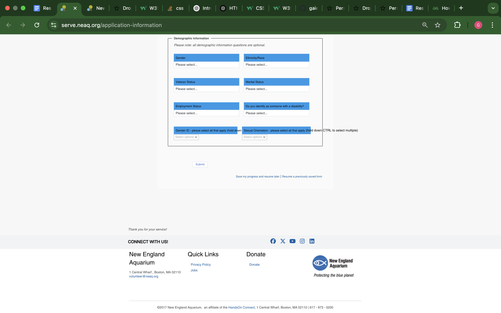
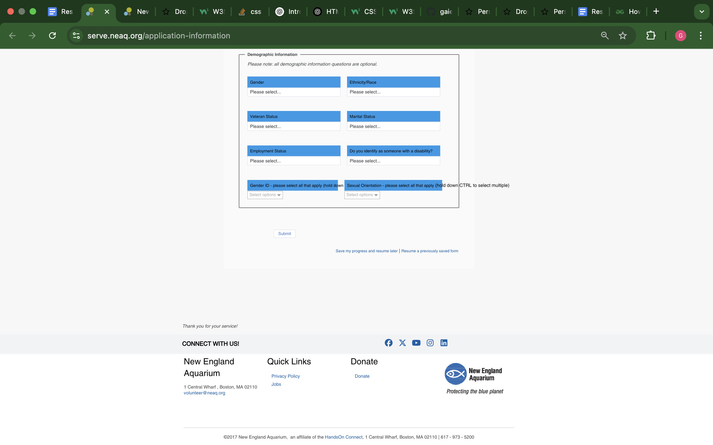
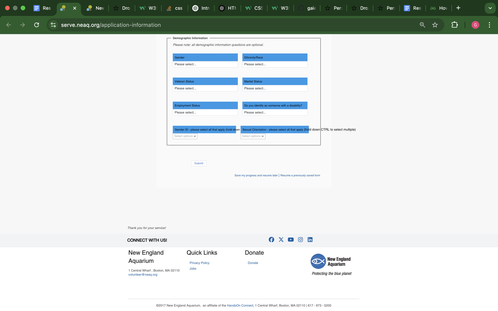

I will be picking one page of a website, identifying problems, and then redesigning it!

I chose this website because I think the header and footer can be improved easily, and their design isn’t really seamless. I feel like this application page can be updated to match other recently, well designed applications.
| Questions | Summary of Responses | |
|---|---|---|
| 1. | How often do you use your key vs keypad to unlock the door? | There is another door to the apartment building that does not have a keypad. It automatically locks so the user needs to have a set of keys accessible a few moments prior to unlocking the unit door. But to get into the unit door specifically, the keypad is used. |
| 2. | How many attempts at unlocking the door do you average before it unlocks? | The users mainly unlock the door on the first try. |
| 3. | How do you feel about the size of the buttons? | The users are happy with the size of the buttons. |
| 4. | Are you able to differentiate between the noises for an incorrect and correct entry? | The users note there is beep when the code is entered incorrectly. |
| 5. | Can you tell when the door is unlocked vs locked from the outside? | The users cannot tell, however, the users feel it is okay that it is not displayed to other people passing by when their door is unlocked. For a typical door lock, it is not clear if the door is locked unless you try the door, and the same principle applies here. |
| 6. | How do you feel about the security of the lock? | The users responded they felt the security of the door was good and no issue was raised. They explained that maintenance people from the apartment building staff have the code. |
Then I made two empathy maps based on my observations and interviews.
I was surprised to find people were relatively satisfied with the interface. This makes sense since the keypad lock is popular these days, especially as remote controlled door locks become more common with security systems.